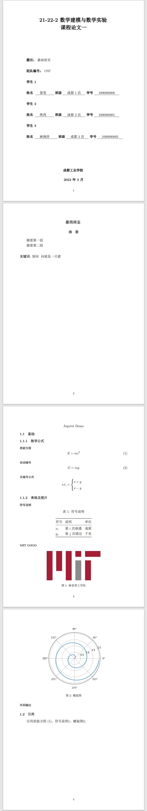
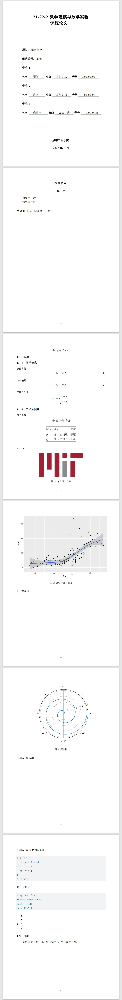

Last updated: May 9 2022
概述
关于Quarto
Quato是一个开源的科技出版系统，支持Jupyter、RStudio和VS Code等多种代码编辑器。其官方描述如下：
创建代码与文本结合的可动态编译内容。支持Python、R、Julia和Observable。
使用markdown文本或Jupyter笔记本的形式进行编译。
渲染高质量论文、报告、幻灯片、网站、博客和书籍，并以HTML、PDF、MS Word、ePub或其他格式输出。
支持数学公式、引文、交叉引用、图表、标注、高级布局以及其他特性。
使用须知
本文主要介绍Quarto在数学建模论文排版上的应用。关于此数学建模论文模板的使用，需要声明以下几点：
该模板谨按照全国大学生数学建模竞赛的标准进行设计，不适用于美赛、深圳杯等其他数学建模赛事。
本模板仅适合对排版要求不高的朋友采用。模板主要使用LaTeX编写，由于一篇论文的编译流程大致为：ipynb/qmd -> md -> Pandoc -> PDF，层层抽象过多，故自定义排版布局对使用者相关知识的要求较高，且一旦编写格式逾矩，排错难度较大。
对模板的过度依赖会导致使用者个人的排版能力下降，即使理想的未来情况为内容创作者不再需要为各式样的排版劳心，但就目前来说，社会对于个人的排版能力仍然有一定要求。
应用范例
在Jupyter中使用数学建模论文模板，只需为原Jupyter Notebook笔记本添加YAML头（raw模式），然后使用Quarto编译，即可渲染为指定论文格式。
=============raw代码块=============
---
#-----YAML文件-----#
crossref:
fig-prefix: 图 # 设置引用格式
tbl-prefix: 表
eq-prefix: ""
format:
pdf:
template: stulink.tex
keep-tex: true
html:
toc: true
toc-depth: 4
code-fold: true
#--队伍信息及摘要页--#
NO: 一
group: 1707
school: stulink大学
#-------------------
name1: 蛋卷
class1: 成都1店
number1: 1000000000
#-------------------
name2: 烤肉
class2: 成都2店
number2: 1000000001
#-------------------
name3: 麻辣拌
class3: 成都3店
number3: 1000000002
#-------------------
time: 2022年3月
preface: yes # 是否显示组队信息
title: "暴雨将至"
abstract: |-
摘要第一段
摘要第二段
keyword: 别问 \ 问就是一只猪
---
==========Markdown代码块===========
# Jupyter Demo
## 基础
### 数学公式
#### 质能方程
$$
E = mc^2
$$ {#eq-质能方程}
#### 自动编号
$$
G = mg
$$ {#eq-重力公式}
#### 无编号公式
$$
\text{s.t.} =
\begin{cases}
x + y\\
x - y
\end{cases}
$$
### 表格及图片
#### 符号说明
| 符号 | 说明 | 单位 |
|-------|-------------|------|
| $x_i$ | 第$i$次相遇 | 毫厘 |
| $y_j$ | 第$j$次错过 | 千里 |
: 符号说明 {#tbl-符号说明}
#### MIT LOGO
{fig.pos="H" width="50%" height="17.5%"}
#### 代码输出
===========Python代码块============
#| echo: false
#| fig.pos: "b"
#| label: fig-螺旋
#| fig-cap: "螺旋图"
import numpy as np
import matplotlib.pyplot as plt
r = np.arange(0, 2, 0.01)
theta = 2 * np.pi * r
fig, ax = plt.subplots(
subplot_kw = {'projection': 'polar'}
)
ax.plot(theta, r)
ax.set_rticks([0.5, 1, 1.5, 2])
ax.grid(True)
plt.show()
==========Markdown代码块===========
## 引用
引用质能方程([-@eq-质能方程])、符号说明[-@tbl-符号说明]、螺旋图[-@fig-螺旋]。
RStudio为数学公式的输入提供了可视化。分为Source和Visual两种编辑模式，其中Visual模式提供了一些插件以便捷插入图表、代码块等。
---
#------YAML文件------#
crossref:
fig-prefix: 图 # 设置引用格式
tbl-prefix: 表
eq-prefix: ""
format:
pdf:
template: stulink.tex
keep-tex: true
html:
toc: true
toc-depth: 4
code-fold: true
#--队伍信息及摘要页--#
NO: 一
group: 1707
school: stulink大学
#---------------------
name1: 蛋卷
class1: 成都1店
number1: 1000000000
#---------------------
name2: 烤肉
class2: 成都2店
number2: 1000000001
#---------------------
name3: 麻辣拌
class3: 成都3店
number3: 1000000002
#---------------------
time: 2022年3月
preface: yes # 是否显示组队信息
title: "暴雨将至"
abstract: |-
摘要第一段
摘要第二段
keyword: 别问 \ 问就是一只猪
---
# Jupyter Demo
## 基础
### 数学公式
#### 质能方程
$$
E = mc^2
$$ {#eq-质能方程}
#### 自动编号
$$
G = mg
$$ {#eq-重力公式}
#### 无编号公式
$$
\text{s.t.} =
\begin{cases}
x + y\\
x - y
\end{cases}
$$
### 表格及图片
#### 符号说明
| 符号 | 说明 | 单位 |
|-------|-------------|------|
| $x_i$ | 第$i$次相遇 | 毫厘 |
| $y_j$ | 第$j$次错过 | 千里 |
: 符号说明 {#tbl-符号说明}
#### MIT LOGO
{fig.pos="H" width="50%" height="17.5%"}
#### R代码输出
```{r}
#| echo: false
#| fig.pos: H
#| label: fig-空气质量
#| fig-cap: 温度与臭氧浓度
#| warning: false
library(ggplot2)
ggplot(airquality, aes(Temp, Ozone)) +
geom_point() +
geom_smooth(method = "loess"
)
```
#### Python代码输出
```{python}
#| echo: false
#| fig.pos: H
#| label: fig-螺旋
#| fig-cap: "螺旋图"
import numpy as np
import matplotlib.pyplot as plt
r0 = np.arange(0, 2, 0.01)
theta = 2 * np.pi * r0
fig, ax = plt.subplots(
subplot_kw = {'projection': 'polar'}
)
ax.plot(theta, r0)
ax.set_rticks([0.5, 1, 1.5, 2])
ax.grid(True)
plt.show()
```
\newpage
#### Python与R的相互调用
\indent
```{r}
# R代码
df = data.frame(
"a" = 1:3,
"b" = 4:6
)
df[["a"]]
```
```{python}
# Python代码
import numpy as np
data = r.df
data[["a"]]
```
## 引用
引用质能方程([-@eq-质能方程])、符号说明[-@tbl-符号说明]、空气质量图[-@fig-空气质量]。
使用指南
准备工作
从Quato官网下载并安装软件
使用终端（Terminal）执行命令：
quarto tools install tinytex- 把以下路径加入环境变量：
# 注意改成你的用户名
C:\Users\用户名\AppData\Roaming\TinyTeX\bin\win32选择编辑器
数学公式
Quarto使用LaTeX格式的数学公式。LaTeX数学公式是计算机中最为广泛使用的公式输入格式，大多数文字或文档编辑软件都对LaTeX数学公式提供支持，例如：Word、Jupyter、Matlab等。下面介绍Quarto中数学公式的输入。
LaTeX中数学公式的输入分两种模式：行内模式（$ … $）与行间模式
$$
...
$$前者是在正文的行文中插入数学公式；后者单独成行，且自动居中。
例如$E=mc^2$显示为\(E=mc^2\),而
$$
E=mc^2
$$则显示为： \[ E=mc^2 \]
输入带自动编号的公式则需要使用Quarto的交叉引用功能，例如：
$$
E=mc^2
$$ {#eq-einstein}
# 第二个$$和{}间的空格不能少显示为： \[ E=mc^2 \qquad(1)\]
交叉引用功能留待后面小节进行介绍。
图片与表格
Quarto的图片及表格插入使用Markdown语法。
插入图片
图片插入请使用’!+[图片名]+(路径/链接)’的形式，支持插入的图片格式包括JPG、PNG、PDF等（不支持SVG），例如：
{#fig-MIT}
# “{#fig-MIT}”的用处将在后面进行说明显示为：
特别的，针对PDF输出，可在后添加{}控制输出样式，例如：
{fig.pos="H" width="50%" height="25%"}代表禁止图片浮动（有时会失效）、图片宽度占PDF页面的50%，高度占页面的25%。
插入表格
例如：
| 符号 | 说明 | 单位 |
|-------|-------------|------|
| $x_i$ | 第$i$次相遇 | 毫厘 |
| $y_j$ | 第$j$次错过 | 千里 |
: 符号说明 {#tbl-符号说明}
# “: 符号说明” 代表指定表格名称
# “{#tbl-符号说明}”的用处将在后面进行说明,其与表名间的空格不可省略显示为：
| 符号 | 说明 | 单位 |
|---|---|---|
| \(x_i\) | 第\(i\)次相遇 | 毫厘 |
| \(y_j\) | 第\(j\)次错过 | 千里 |
代码块输出
例如：
```{python}
#| label: fig-螺旋
#| fig-cap: "A line plot on a polar axis"
import numpy as np
import matplotlib.pyplot as plt
r = np.arange(0, 2, 0.01)
theta = 2 * np.pi * r
fig, ax = plt.subplots(
subplot_kw = {'projection': 'polar'}
)
ax.plot(theta, r)
ax.set_rticks([0.5, 1, 1.5, 2])
ax.grid(True)
plt.show()
```
# “#| 参数”可以设置代码块运行和输出机制显示为：
交叉引用
本节介绍Quarto的交叉引用，我们在先前小节的数学公式、图片和表格中分别标记了{#eq-einstein}、{#fig-MIT}和{#tbl-符号说明}，我们可以在文中任何地方引用他们，格式为[-@...]，例如：
[-@tbl-符号说明]显示为：1
由于我们在上一节中的代码段中添加了标签#| label: fig-螺旋，所以我们也可以引用螺旋图2。
数学模板的使用
- 下载模板文件
cumcm.tex和范例图片mit_logo.png：
{kind=link}
- 下载你的编辑器所对应文件格式：
- 将下载的三个文件放入同一文件夹中，编译对应文件查看结果。